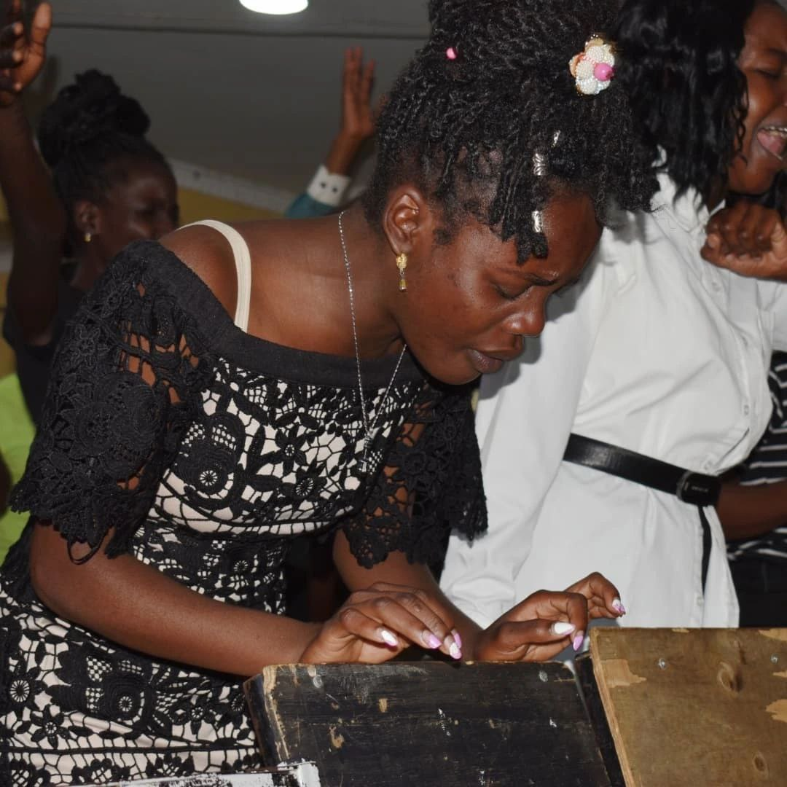
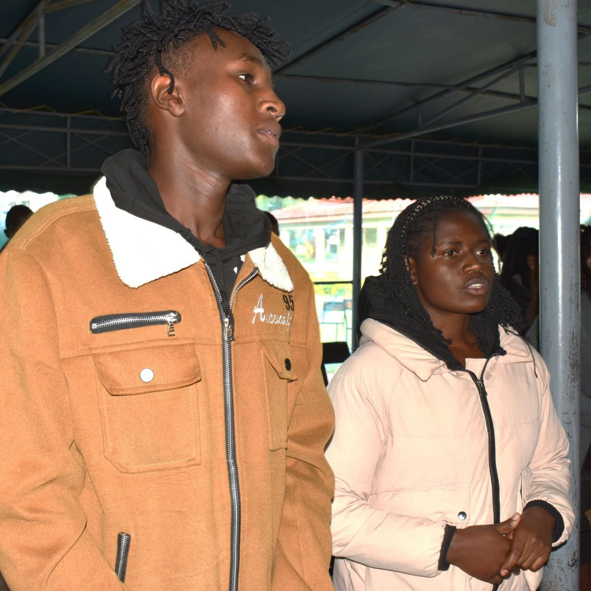
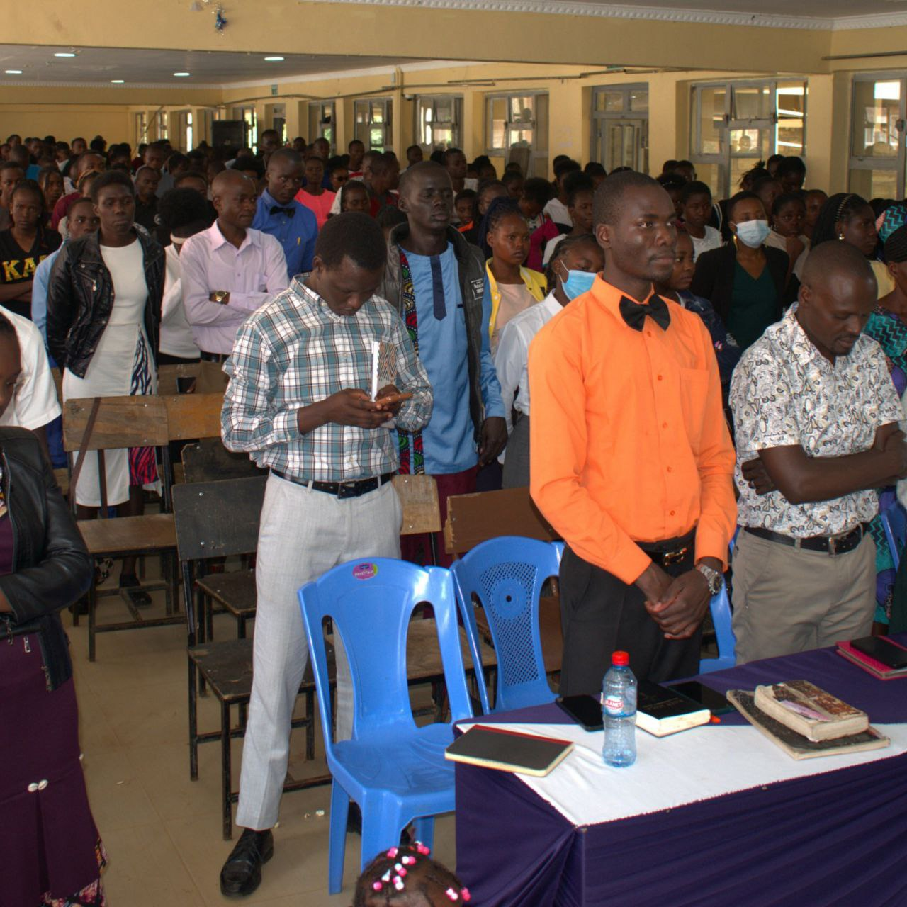
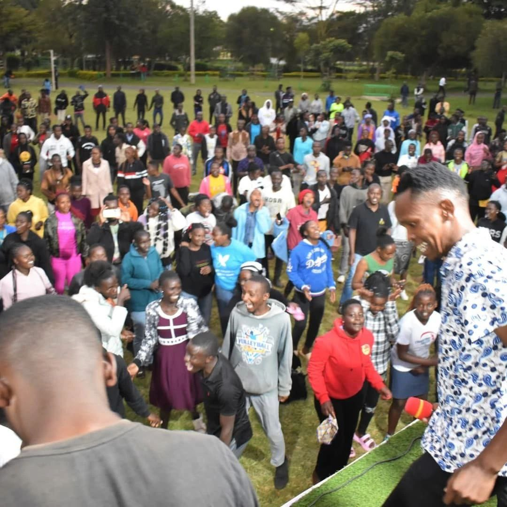
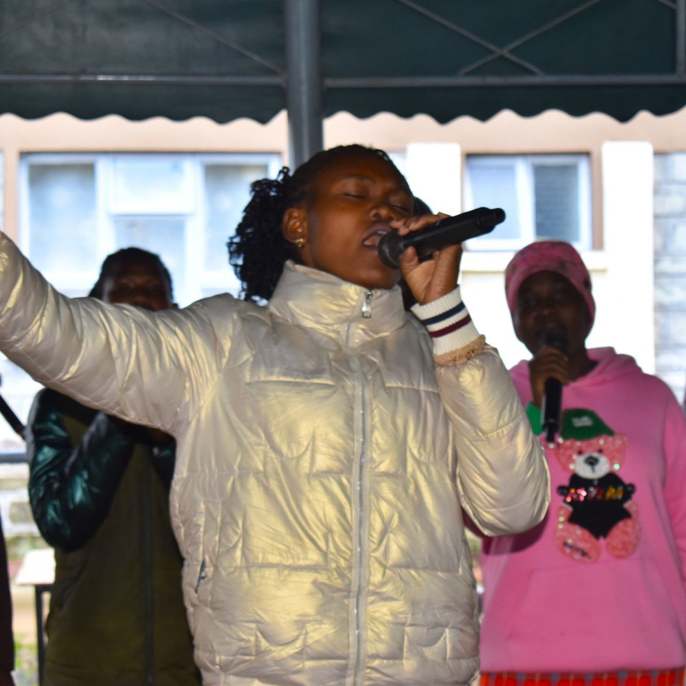

Regular Services

Sunday Worship
Every Sunday at 7:00AM-12:00PM Service.
Join us for our main weekly worship service featuring uplifting music, prayer, and biblical teaching.
Main Sanctuary

Discipleship And Bible Study
Every Friday at 5:00PM-6:30PM
Bible study and prayer meeting for deeper exploration of God's Word.
Fellowship Hall

Youth Gathering
Every Friday at 6:30 PM
Dynamic worship and relevant teaching for youth ages 13-18.
Main Sanctuary

Family Meetings
Every Monday at 5:00PM-6:30PM
"Where generations connect in Christ's love ❤️
Main Sanctuary

Co-operate Prayers And Ministries Training
Every Tuesday at 5:00PM-6:30PM
Where prayer and preparation collide 🙏⚡
Main Sanctuary

Ministries Training.
Every Saturday at 2:00PM-5:00PM
From passion to purpose – training for God's work 📖🔥
Main Sanctuary